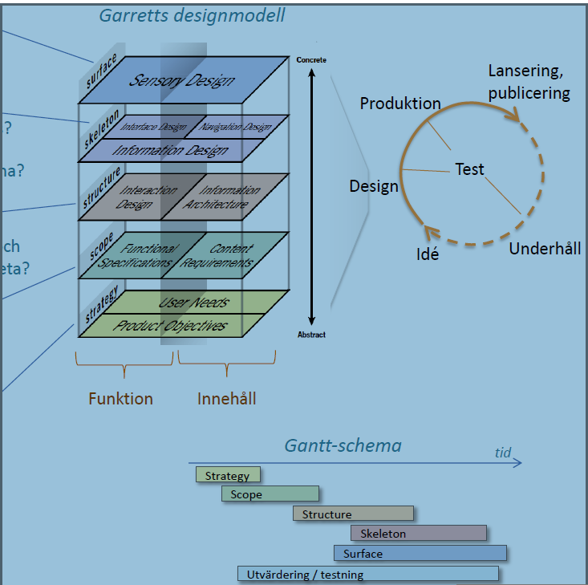
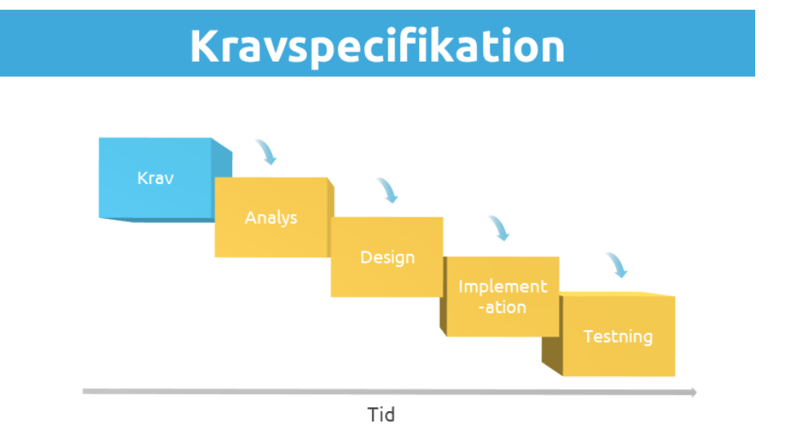
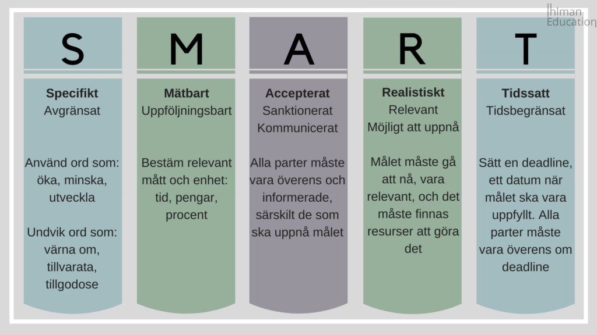

MålgruppAnalysis
För att nå de förutbestämda målen är det viktigt att arbeta med användarkrav. Det är i grunden hur webbutvecklare uppfyller användarens förväntningar och hur produkten/webbplatsen interagerar med andra vad gäller dess egenskaper, funktioner och egenskaper. Användarbehov kan uttryckas med människors mål värderingar och ambitioner. Det finns olika typer av krav som måste beaktas när webbplatsen görs.
För att uppnå de förutbestämda målen med hjälp av målgruppsanalyser behöver vi göra en detaljerad layout av användarkrav. Det finns olika typer av krav som ska undersökas innan du skapar en webbplats. Det kan vara;
- Affärskrav
- Funktionskrav
- Krav på servicekvalitet
- Användarkrav
- Genomförandekrav.
Kravspecification
För att kunna utveckla någon mjukvara eller webbplats är det viktigt att kravspecifikationen måste vara uttrycksfull så att syftet med att göra webbplatsen är entydigt. För att nå målen krävs följande steg.
- Gör en disposition
- Gör en överblick
- Ange syftet
- Kapacity
- Undehållbarhet
- Tillgängligt
- MÅL och åmråde till webben
- Förklara de funktionella och icke-funktionella kraven
- lägg till ytterligare detaljer och var tydlig
Mätbara Kravspecifikationen
Mätabara är en viktig aspect i kravspecifiaction för den undersökar hur användarna använder en produkt eller ett system under 5 performance
- Tsak Success-Den ska mäta hur väl och hur användaren klarar uppgift.
- Tid på task- Ska mått hur lång tid har tagit användare för att performera en uppfif
- Efficiency- Ett mått på hur resurseffektivt en användare performera en uppgift
- Error - den ska mäta hur mång fel en användren ska göra
- Learnability-den ska mäta hur användarens kunskaper förändras över tid.
Ett exampel av detta än tänka om en fotball tema som spelar fotball på fotballsplannen utan klocka, målstolpar, målzoner, yardlinjer, resultattavla, eller till och med tydliga lag. Den är rolligt att spela för några minutes efter det de har ingen motibation att spela vidare. Däreför det är jätteviktig att mål för göra någontig för att den ge oss motivation att förtsätta vidare för att .
